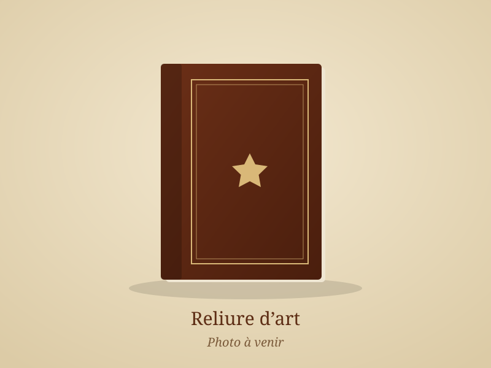
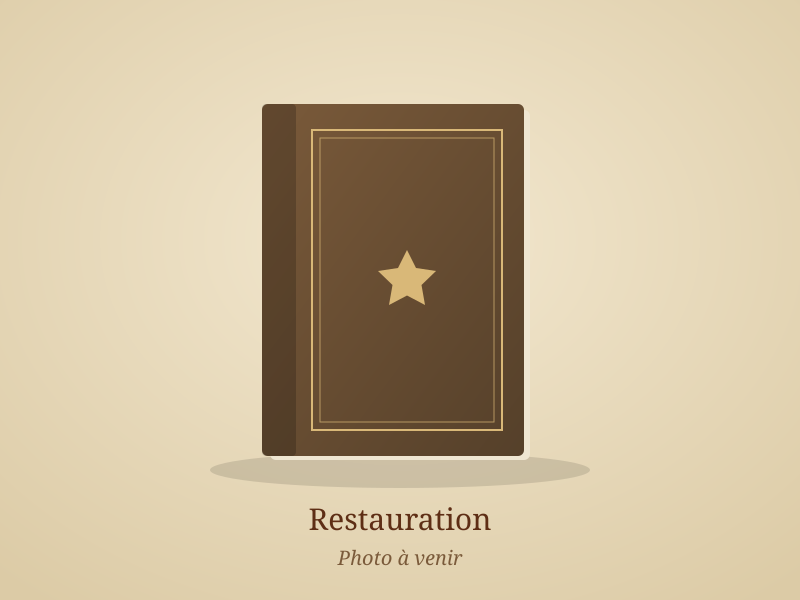
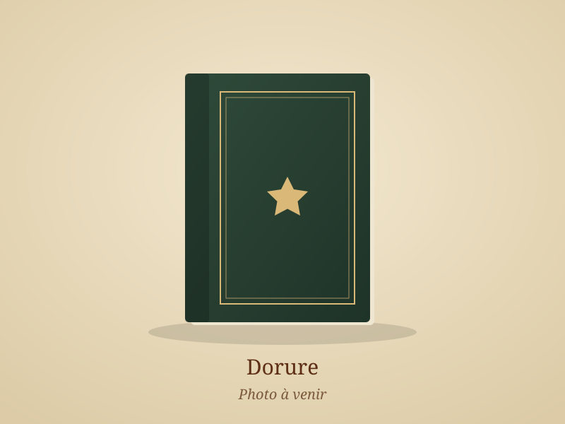

Reliure
Reliure d’art, traditionnelle et artisanale, mais aussi reliure cartonnée, administrative et de documents.
En savoir plusArtisan relieur à Dun-sur-Meuse · Meuse
Reliure, dorure et restauration de livres anciens,
réalisées à la main dans l’atelier de François Battistini.
Un livre de famille à sauver, un mémoire à relier, un registre à habiller, une collection à mettre en valeur : à l’atelier, chaque ouvrage est pris en charge avec soin, selon les gestes et les matériaux de la reliure traditionnelle.
Reliure d’art, traditionnelle et artisanale, mais aussi reliure cartonnée, administrative et de documents.
En savoir plusTitres, filets et décors dorés à la main, à la feuille d’or, pour signer et sublimer chaque reliure.
En savoir plusRestauration de livres anciens : couture, dos, coins, coiffes et pages abîmées, dans le respect de l’ouvrage.
En savoir plus
Reliure Reliure d’art en plein cuir, décor doré

Restauration Restauration d’un livre ancien : couture et couvrure reprises

Dorure Titre et filets dorés à la feuille d’or
Les tarifs sont établis sur devis, gratuitement, selon l’ouvrage, son état et la finition souhaitée. N’hésitez pas à passer à l’atelier ou à appeler pour en parler.